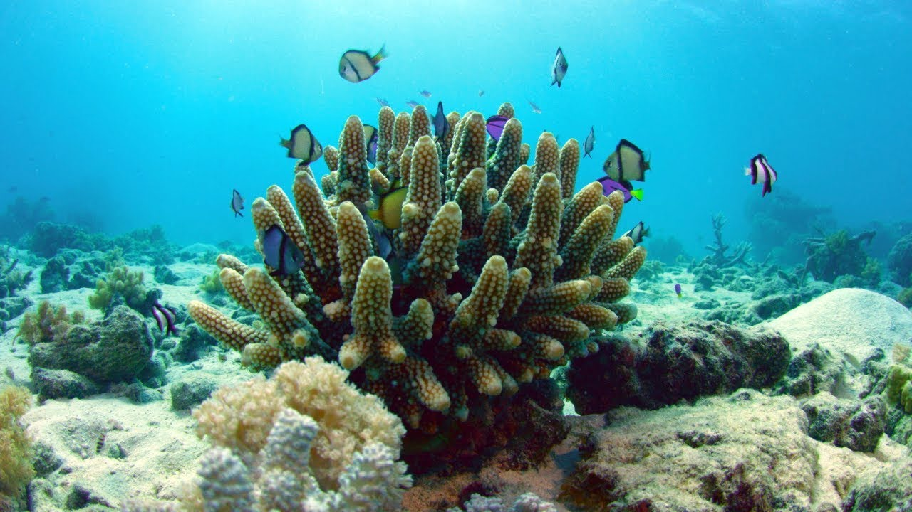
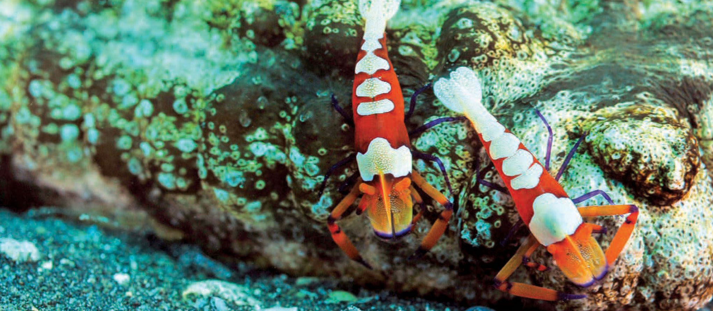

Symbiosis -
the relationship or interaction between two dissimilar organisms.

What exactly is coral? ABC Science. October 5th, 2017.
Planet Earth is inhabited by millions of species—at least! Because different species often inhabit the same spaces and share—or compete for—the same resources, they interact in a variety of ways, known collectively as symbiosis. There are five main symbiotic relationships: mutualism, commensalism, predation, parasitism, and competition.
To explore these relationships, let’s consider a natural ecosystem such as the ocean. Oceanic environments are known for their species diversity. Imagine you are on a diving expedition to explore the worlds beneath the waves. If we were in the warm waters of the Pacific or Indian Oceans, we’d likely spot an excellent example of mutualism: the relationship between clownfish and sea anemones. In a mutualistic relationship, both species benefit. Sea anemones live attached to the surface of coral reefs. They trap their prey with stinging cells called nematocysts, which are located on their tentacles. Nematocysts release toxins when a small animal contacts an anemone’s tentacle. This paralyzes the stung animal, allowing the anemone to easily bring the animal into its mouth for ingestion.
While other fish succumb to these toxic stings, clownfish secrete a substance in the mucus covering their bodies that suppresses the firing of nematocysts. This allows the clownfish to swim comfortably between the tentacles of anemones, creating a protected environment in which potential predators are killed off by anemone stings. This clearly benefits the clownfish, but how about the sea anemones? The brightly-colored clownfish attract other fish looking for a meal. These unsuspecting would-be predators are then caught and eaten by the anemones.

A pair of colourful emperor shrimps sitting on a sea cucumber, Christian Skauge.
As we continue in our imaginary deep-sea voyage, we may observe the commensalistic relationship that exists between barnacles and humpback whales. Commensalism happens when one species lives with, on, or in another species, known as the host. The host species neither benefits nor is harmed from the relationship. In our imagined example, various species of barnacles attach themselves to the skin of whales. Scientists have not discovered the exact mechanism by which barnacles are able to do this, but it does not appear to bother the whales. How do the barnacles benefit from this unlikely relationship? The huge whales transport the tiny barnacles to plankton-rich waters, where both species feast upon the abundant microorganisms that live there.
Of course, some symbiotic relationships do cause harm. In predation, one species (the predator) hunts and kills another species (the prey). One of the better studied predators in the oceans is the orca, or killer whale. Found in every ocean on Earth, orcas are categorized as apex predators. Though they hunt and eat numerous other organisms—over 140 species—orcas themselves are not hunted by any other predator. In other words, they are at the top of the food chain!
Another harmful relationship is parasitism. This happens when one species (the parasite) lives with, on, or in a host species, at the expense of the host species. Unlike in predation, the host is not immediately killed by the parasite, though it may sicken and die over time. Examples of common parasites found in the ocean include nematodes, leeches, and barnacles. That’s right—though barnacles exist commensally with whales, they are parasites for swimming crabs. A barnacle may root itself within a crab’s reproductive system. While the crab does not die from this interaction, its reproductive capabilities are greatly diminished.
The last example of symbiosis we will explore on our imaginary dive is competition — the struggle among organisms for the same limited resources in an ecosystem. Competition can happen between members of the same species (intraspecific competition) and between different species (interspecific competition). An example of interspecific competition in the ocean is the relationship between corals and sponges. Sponges are very abundant in coral reefs. If they become too successful, however, they take needed food and other resources from the corals that make up the reef. Sponges may outcompete corals for resources in the short term, but if too many corals die, the reef itself becomes damaged. This is bad for the sponges, which may themselves begin to die off until the reef is balanced again.
Symbiotic relationships can be useful measures of an ecosystem’s health. For example, large tracts of coral reefs are severely damaged or dead because of recent increases in ocean temperature due to climate change. The temperature increase induces coral to expel the algae that live mutualistically within them. Without their algae, the coral turn white and die. This loss of symbiosis is an early sign of declining coral health and speaks to the importance not only of studying symbiosis within marine environments, but also of examining the negative impacts that humans can have on these interactions. In the words of National Geographic Explorer Sylvia Earle:
“We need to respect the oceans and take care of them as if our lives depend on it. Because they do.”